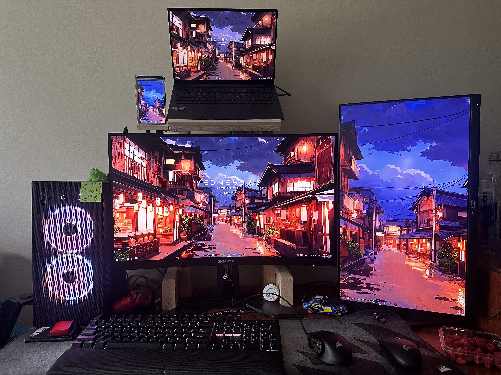
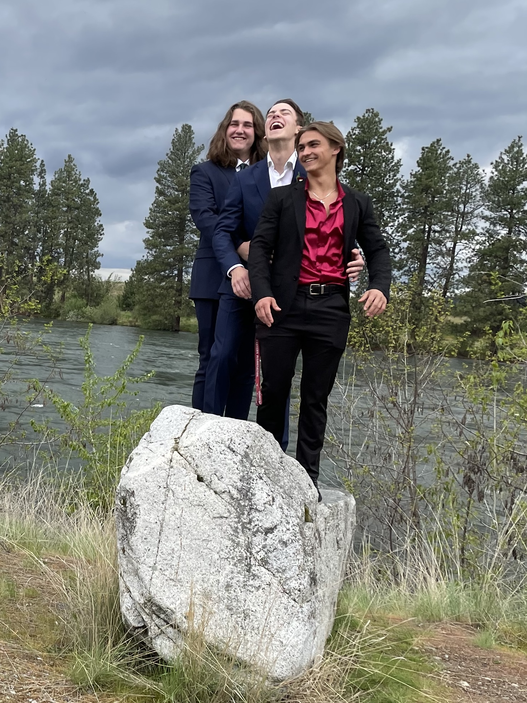

This page is dedicated to some information about me!
Throughout my life there have been many things that interest me and some of those things I have been able
to turn into hobbies and others still are just interests. along the way, I have had many achievements which are
detailed in their own tab.
Here is a interactive graph for step tracking!
Hobbies
There have been several thing that I enjoy as my hobbies and those include things like:
Throughout the years I have built several computers which have allowed me to connect with
people across the globe. Part of the enjoyment of computer for me is to find out how they go together.
I enjoy calling building computer adult legos because the two are fairly similar in how they are put together
and if you mess up then its alot more expensive.

Riding motorcycles and driving cars
Another thing that I love doing is operating pretty much anything with a motor. This has extended
to me loving cars and motorcycles and as a result, I have been able to find friends pretty much everywhere I go.
And having fun with friends
The last thing here although by far not the last thing I enjoy is having fun and causing chaos with my friends.
Most of my friends love at least one of the things that I love doing and by having that common ground it has created
Brothers and an environment of chaos.

Interests
Mechanical
Cars
Motorcycles
Dirt Bikes
Go Karts
Electronics
Building Desktops. I have built several through my time and always try to challenge myself
Taking apart old systems to see how they function and if I can use anything
Network structure such as Wake on Lan
Automation of continuous tasks
Animals
Bunnies, I like seeing how fluffy they are and what their personality is like
Cats. Although I am allergic I do enjoy spending time with cats
Outdoor creatures. I enjoy seeing creatures in nature and how they respond to safe human interaction
random Topics I have interests in:
Radioactivity
Processes for random tasks such as vehicle manufacturing plants
Laws that will allow me to do fun things or to learn the result of doing something I shouldn't
Achievements
There have been many things that I have done in life but the biggest one that comes to mind is that of my Eagle
Project.
For my Eagle Project I made 50 Fleece blanket kits and paired them with
stuffed animals. Those then were brought to the foster care system that was incharge of my state. It was not a easy task
even though we knew exactly what to do. I have been making these blankets since I was a little kid and could make them in my sleep.
The psychology behind why we included the stuffed animals was interesting to learn. There have been studies that have
said that if a child is given something to care for such as a stuffed animal or toy it helps them process and have a better
outlook towards the whole ordeal. This is because it gives them a way to process some of the hard emotions that come along with a situation like this.
Resume
Mission Statement:
My goal is to become an accountant through BYU's accounting program. It is not an easy path but it is one that I want to trek.
On top of having to be good at math and problem solving there is a human element to it as well.
Education
Central Valley High School
Expirience
Lowes Order Fulfillment Associate
Kohls / Online sales Associate / Customer Service Representative